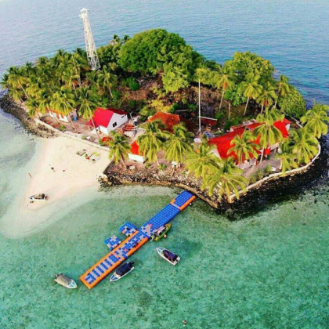
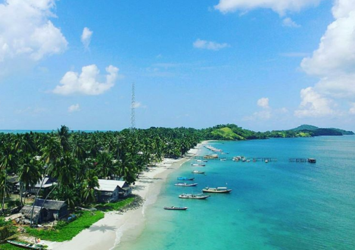
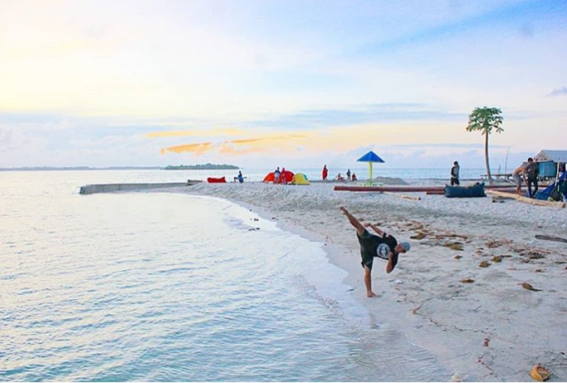
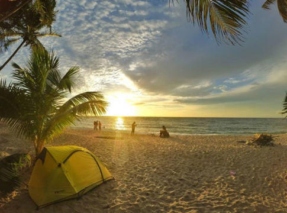
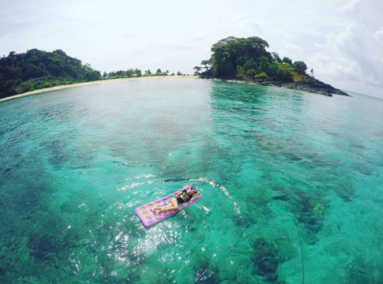
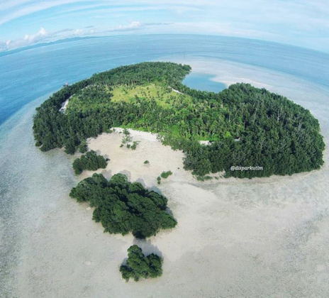
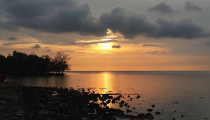
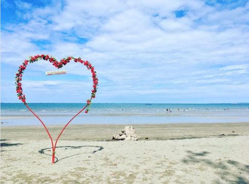

Media Sosial
-
+ instagram
+62-812-5002-1103
=Facebook -_- 
facebook
Kotabaru merupakan salah satu kabupaten yang berada di Kalimantan Selatan. Tak banyak orang yang tahu bahwa di kabupaten ini banyak tempat yang memukau. Keindahan yang dimiliki alam dari Kotabaru ini akan membuat siapa saja yang melihat terpana karena memang sangat mempesona ditambah lagi belum banyak mendapat sentuhan dari campur tangan manusia. Bahkan, sebagian besar orang mengatakan jika Kotabaru menjadi Bali kedua.
Dalam beberapa tahun belakangan, Pulau Samber Gelap tengah naik daun setelah banyak dibicarakan karena keindahannya. Daya tarik dari pulau ini adalah pesona alam bawah lautnya yang sangat menawan. Di Pulau Samber Gelap, wisatawan akan banyak menemui penyu karena banyak terdapat “sarang” penyu di sini.
Pantai Teluk Tamiang juga tak kalah menawan. Pantai yang dapat ditempuh menggunakan tranportasi darat dari ibukota kabupaten Kotabaru ini terkenal dengan berbagai terumbu karang yang terdapat di alam bawah lautnya dari yang kecil hingga yang sangat besar. Saking indahnya, pantai ini disebut-sebut sebagai surganya bagi pecinta snorkeling.
Bila sudah mengunjungi Pantai Teluk Tamiang, patut datang pula ke Pulau Tanjung Kunyit karena letaknya yang cukup dekat. Terdapat mercusuar di pulau ini dan pemandangan dari atas bangunan ini akan memanjakan mata para pengunjung. Keindahannya tak hanya di darat, tetapi bawah lautnya juga sangat memukau.
Bila yang suka ketenangan, Pulau Denauan cocok menjadi pilihan karena pulau indah ini tak berpenghuni. Di pulau yang memiliki pasir putih halus ini pengunjung bisa berkesempatan menyaksikan penyu yang bertelur.
Pulau yang berada di satu kecamatan dengan Pulau Denawan ini juga sayang bila tak dikunjungi. Pulau Pamalikan juga menawarkan keindahan bawah laut serta pemandangan penyu-penyu yang menggemaskan.
Pulau Birah-Birahan memiliki air yang bening dan keindahan yang bisa dinikmati sepuasnya. Salah satu yang menjadi daya tarik adalah indahnya pemandangan matahari tenggelam dari pulau ini. Bila berangkat dari Teluk Tamiang, wisatawan dapat menggunakan kapal nelayan dengan waktu tempuh 2 sampai 3 jam.
Pantai Tanjung Ketapang berjarak 10 km dari ibukota kabupaten Kotabaru. Pantai ini memiliki air yang jernih dan pesona alam hijau yang indah. Pantai ini menawarkan ketenangan dan lanskap yang memanjakan mata dengan laut birunya.
Pantai Gedambaan dulunya dikenal dengan nama Pantai Sarang Tiung karena terletak di Desa Sarang Tiung. Bila ingin bangun subuh demi mencari nikmatnya sensasi menyaksikan matahari terbit yang indah, Pantai Gedambaan adalah pilihan yang tepat karena letaknya yang di timur. Terlalu berlama-lama hingga gelap di pantai ini pun bukan masalah karena sudah terdapat penginapan di sekitaran pantai.
+62-812-5002-1103